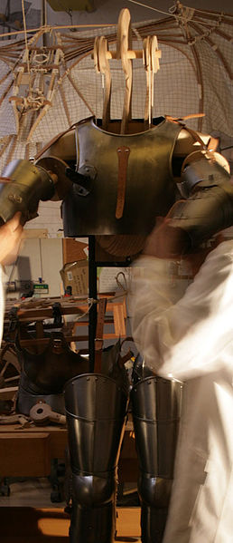

De esta forma, descubrió que el hombre es una máquina maravillosa con palancas (huesos) y fuerza (músculos), lo que le llevó a la idea de crear una máquina con identidad propia mezclando la anatomía con la mecánica.
Así diseñó el primer robot humanoide:

En 2007, Mario Taddei hizo una investigación sobre los documentos originales de Leonardo para encontrar piezas de información para construir un modelo de su robot soldado.
Este robot fue diseñado solo para fines defensivos, no para la guerra o el teatro y su movimiento está relacionados con los brazos que se mueven a derecha e izquierda con una cuerda.
El modelo se muestra en la exposición de todo el mundo y el trabajo de investigación se ha publicado en el libro: Los robots de Leonardo Da Vinci.